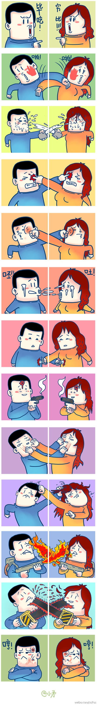

Conversation with 81184027 at Fri 29 Nov 2013 09:25:48 AM CST on 154115835 (webqq)
(09:09:37 AM) 渊泽雨: http://user.qzone.qq.com/1198695440/311
(09:09:37 AM) 渊泽雨: http://user.qzone.qq.com/1198695440/311
(09:32:38 AM) 光: 
(09:34:43 AM) 光: 这张图可以作为基本建议的补充。心靈之光總結出5條退教基本建議：0.和則自癒; 1.不對立，多關心; 2.合理安排時間; 3.管好財物; 4.多讀書，讀好書; 5.養成好習慣，選擇積極正面的人生態度。希望對廣大受害者家屬有一定的幫助。
(09:35:00 AM) 咨询师-泪: 早
(09:35:06 AM) 光: 早
(02:59:03 PM) The account has disconnected and you are no longer in this chat. You will automatically rejoin the chat when the account reconnects.